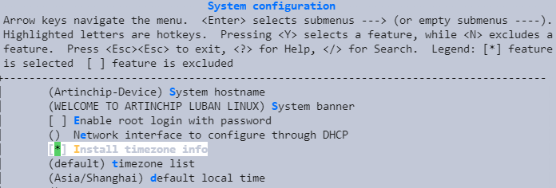

设置时区
15 Jan 2024
Read time: 1 minute(s)
设置时区，需要在 Luban SDK 中使能 Install timezone info 。具体操作步骤如下所示：
-
在 SDK 根目录下执行下列命令，进入 menuconfig 的功能配置界面：
make menuconfig - 在 System configuration 页面，勾选 Install timezone
info ：
- 同时，在 System configuration 页面，配置下列参数：
- timezone list
默认包含以下时区，用户可以选择部分时区，时区之间使用空格分隔：
- africa
- antarctica
- asia
- australasia
- europe
- northamerica
- southamerica
- etcetera
- backward
- factory
关于时区可选列表，可参考
package/third-party/tzdata/tzdata.mk。 - default local
time
关于默认本地时间的可选列表，可查看output/target/usr/share/zoneinfo/ 目录。例如，Asia/Shanghai 即为该目录下的 Asia/Shanghai 时区信息文件。
- timezone list
默认包含以下时区，用户可以选择部分时区，时区之间使用空格分隔：